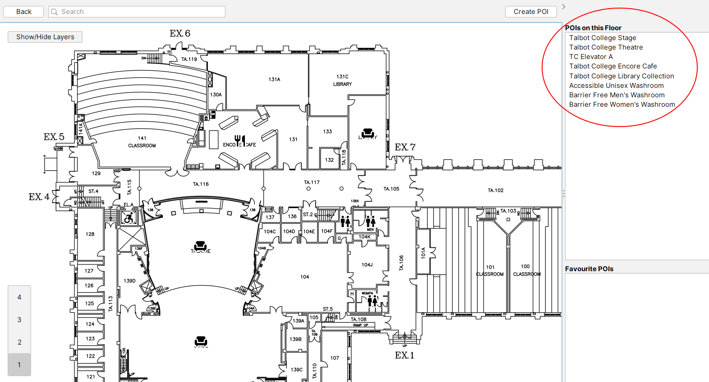

After choosing a map, many POIs will be available.
POI icons will be visible on the map. Click on an icon to select it and view its data.
Additionally, a list of all POIs on the current map can be found on the right. POIs are also selectable by clicking them from this list.
The search bar near the top-left of the map screen can be used to search for POIs. A given search will find matching POIs based on their names, descriptions, and layers.
POIs are categorized into toggleable layers. To show or hide layers, click "Show/Hide Layers" in the top left of the map screen to show the list of all layers. Then, each of the layers can be toggled on or off to show or hide the respective category of POIs.